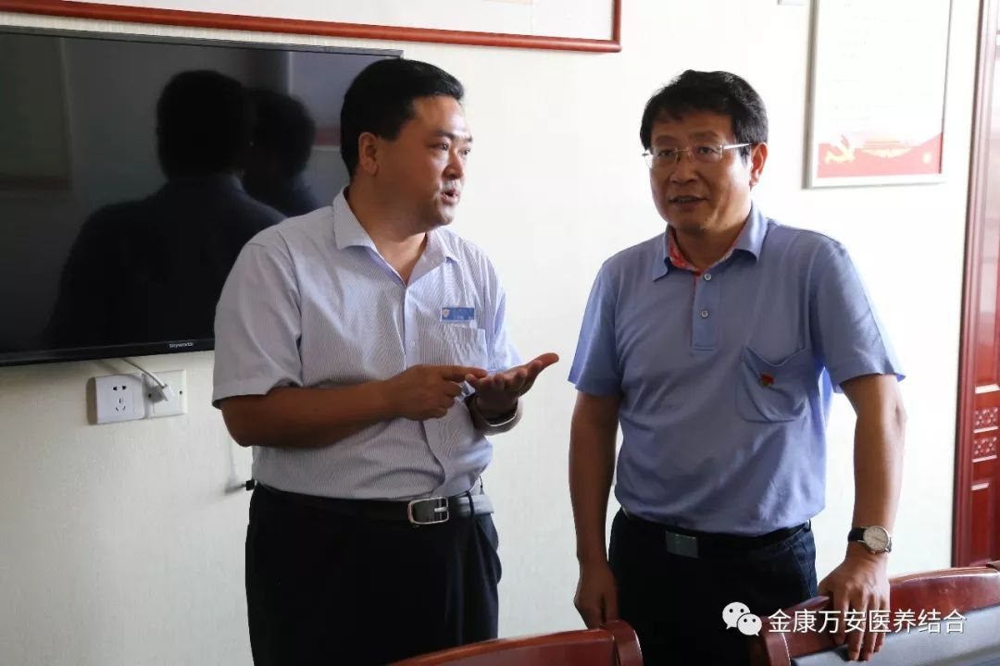
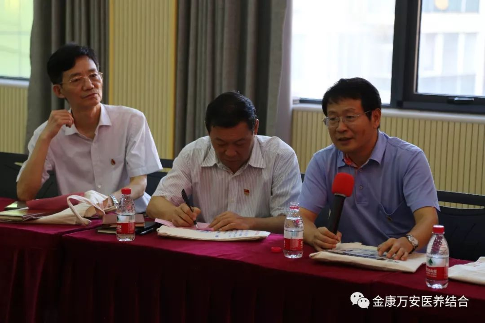
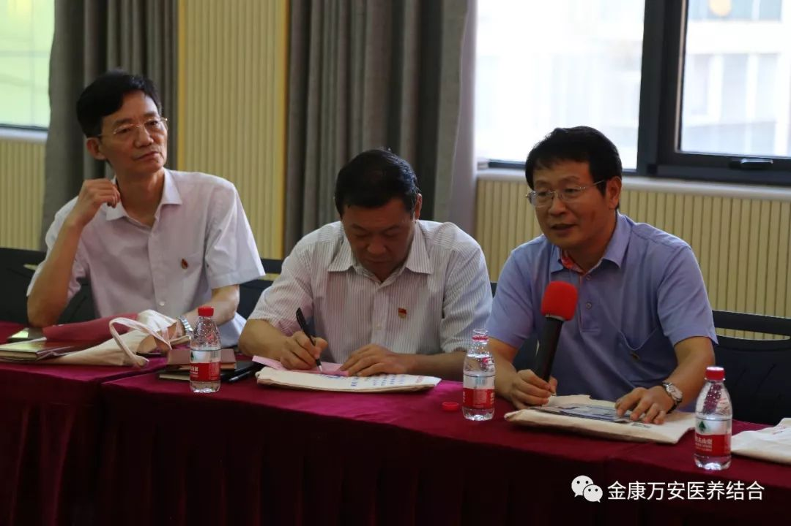

万安医院新闻
漯河市委书记蒿慧杰一行 莅临漯河万安医院、万安老年公寓调研党建工作
人气: "" 时间：2018-08-15
媒体相关报道
2018年8月15日下午，漯河市委书记蒿慧杰一行领导莅临漯河万安医院、万安老年公寓调研党建工作，院长王卫峰、业务院长银令令、刘洋、后勤院长杨延顺等院领导陪同调研。



在党员活动室，蒿书记对我院“党支部成立后对医院业务工作有什么促进？”“平时医院怎么支持党支部工作？”等问题进行了解，院长王卫峰都一一作答。


在随后召开的党建工作座谈会上，蒿书记认真听取了王卫峰院长对我院党建工作的具体汇报。随后就我院下一步做好党建工作提出了要求:
一要通过开展党员亮身份等活动充分发挥党员模范带头作用和党支部堡垒作用，二要在下步工作中大力推进党建工作与业务工作深度融合，通过抓党建推动业务工作地更好开展，通过业务工作开展的实际成效来检验党建工作的效果，使之相互促进、互促共进、相得益彰，防止出现“两张皮”现象。三要注重把优秀员工培养成党员、把党员培养成业务骨干、把业务骨干培养成管理层。
 

调研结束后，蒿书记对我院党建工作给予充分肯定，希望我院党支部不断开拓创新、奋发进取、务求实效，带领全体党员紧密团结在以习近平总书记为核心的党中央周围，努力提升党性修养，充分发挥党员的先锋模范作用，奋力开创各项工作新局面。